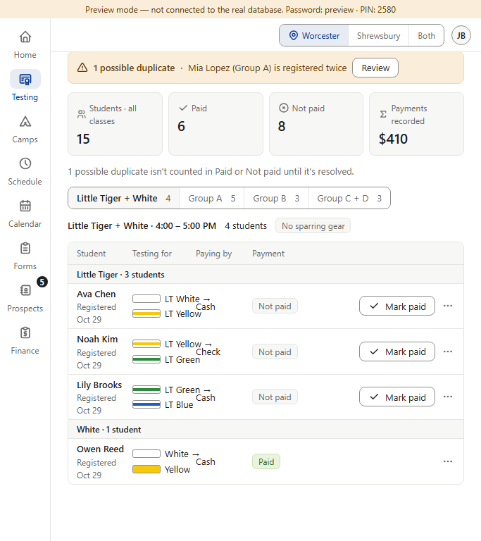
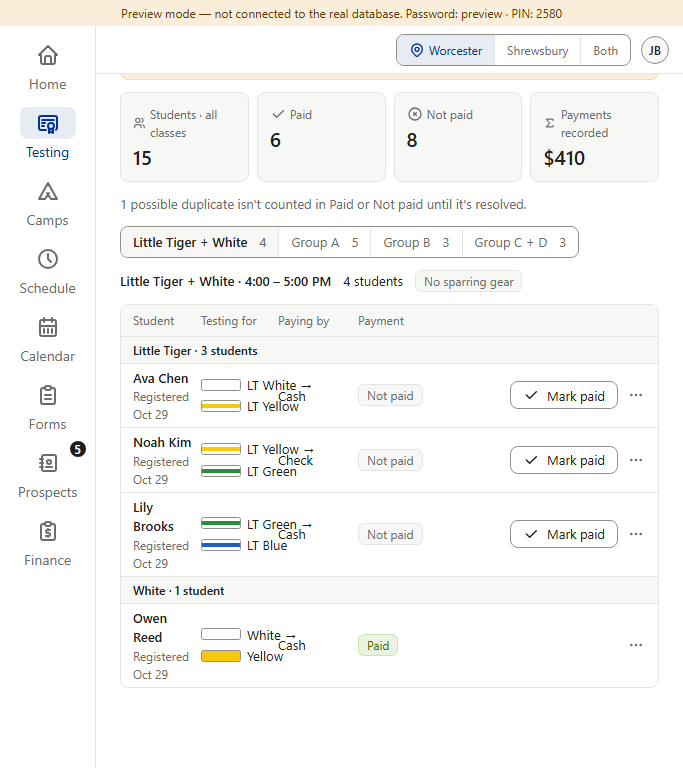
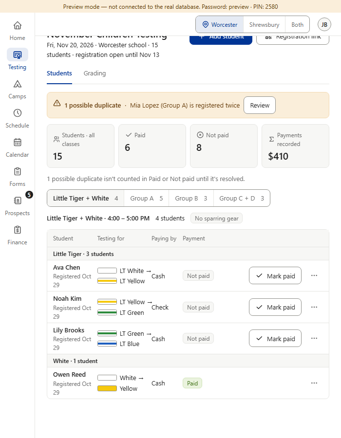
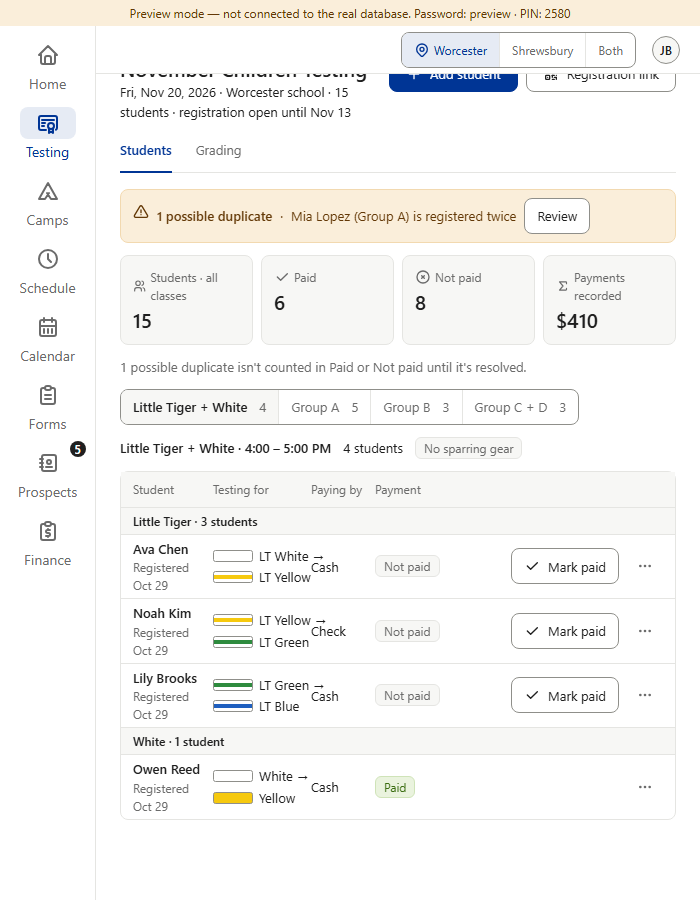
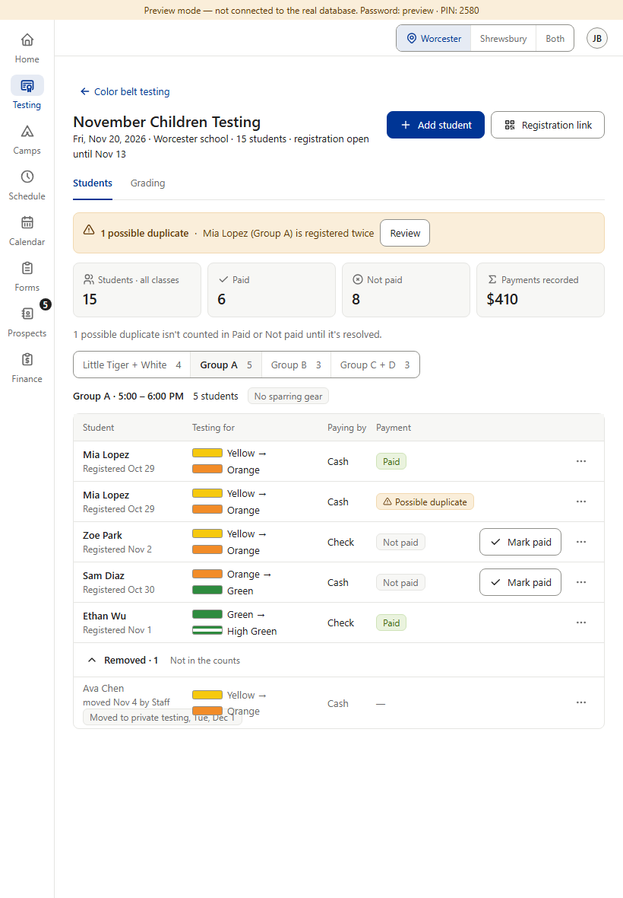
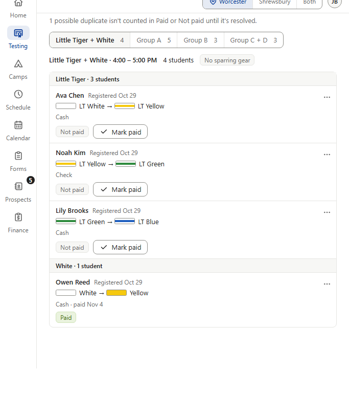
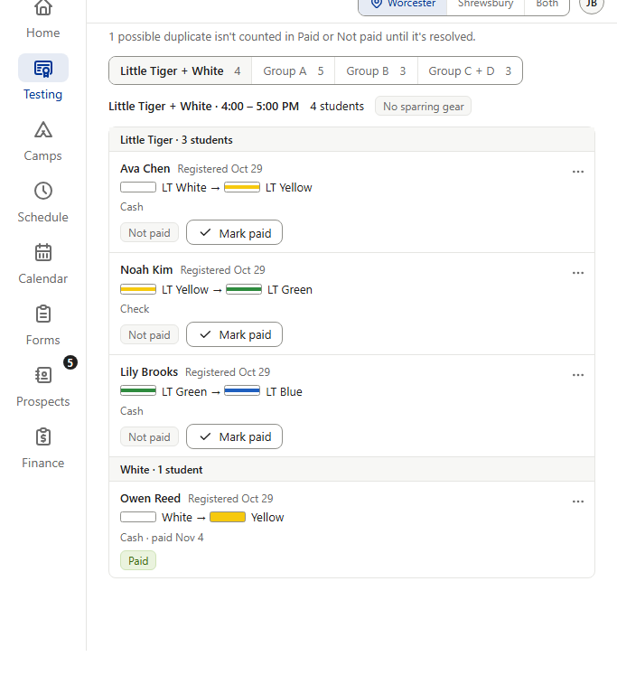
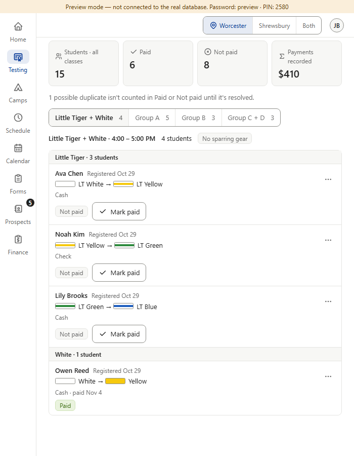
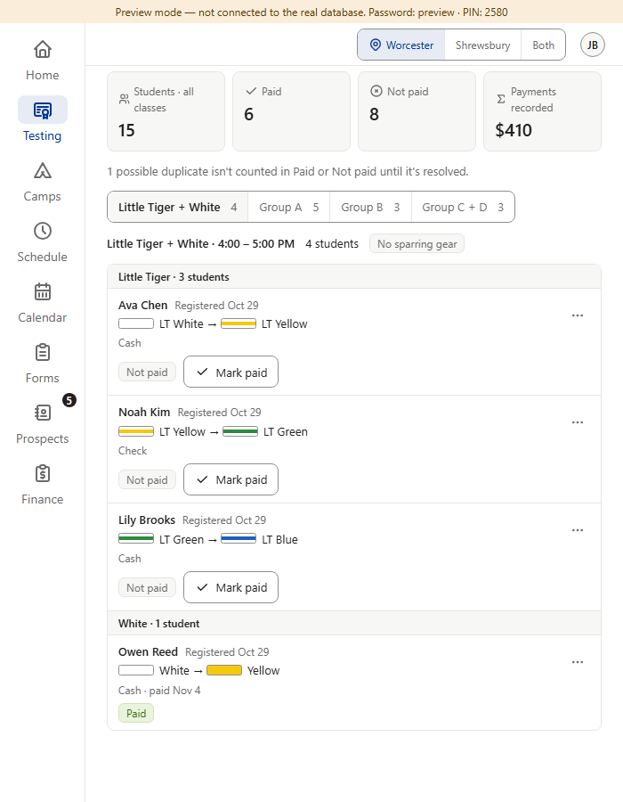
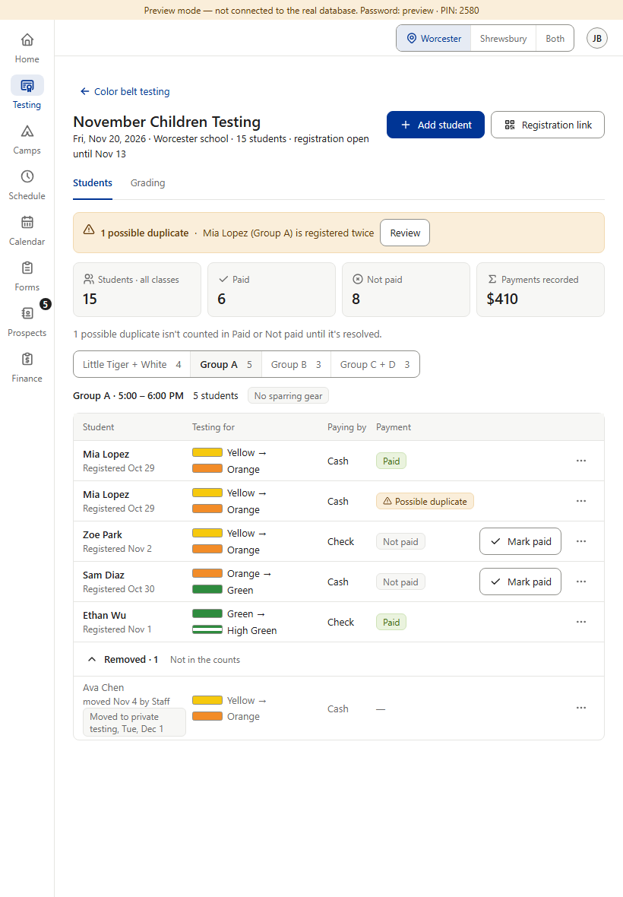

Rulebook v1.053 (you chose “A: room beside panel”) and v1.130 (“B: shared code”). Today the roster picks its columns from the window's width, but the left panel takes 72 px (Standard) or 96 px (Largest) of it, so in a narrow tablet window the columns get less room than they were drawn for and text lands on text (“Cash” printed over “LT White →”). Dashboard core's shared code now measures the room beside the panel. The roster asks whether the room is under its own limit — I measured it: 648 px (with the sample event's longest names, the columns first collide at 636 px with a mouse and at 611 px with touch) — and below it draws the same stacked rows phones already show. Pictures: 683 wide with a mouse and 700 wide on touch, each with the Standard and the Largest panel. Dialogs, ⋯ menus and everything outside the roster keep following the window. Real screenshots of the preview (fake data); the After column is the real code, not a drawing.









